Mt. Apo
At 2,954 meters above sea level, Mt. Apo stands as the grandfather of Philippine peaks—a volcanic giant rising above the forests of southern Mindanao. To climb it is to experience a dramatic shifting of worlds. From the humid tropical foothills, the path ascends through mist-shrouded canopy, crawls over barren sulfuric rock, and finally reveals ancient craters and mirror-like alpine lakes. It is a vertical archive of geologic power and quiet, high-altitude beauty.
The Sea of Clouds
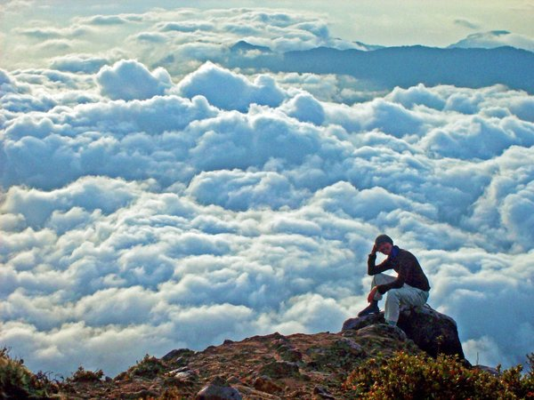
As dawn breaks on the higher slopes of Mt. Apo, the world below dissolves into a vast, silent ocean of white. Known locally as the sea of clouds, this phenomenon transforms the surrounding Mindanao landscape into distant, green islands poking through a rolling blanket of fog. The air at this height is crisp and thin, carrying a silence that is rarely found in the lowlands. Watching the sun rise over this soft, shifting floor is a reward that makes the exhausting hours of night climbing disappear in an instant.
For climbers resting at the high camps, this morning view offers a moment of profound isolation. The clouds block out the cities, the noise, and the modern world, leaving only the peak, the sky, and the cold wind. It is a reminder of the mountain's scale—a sanctuary elevated far above the busy plains of Mindanao.
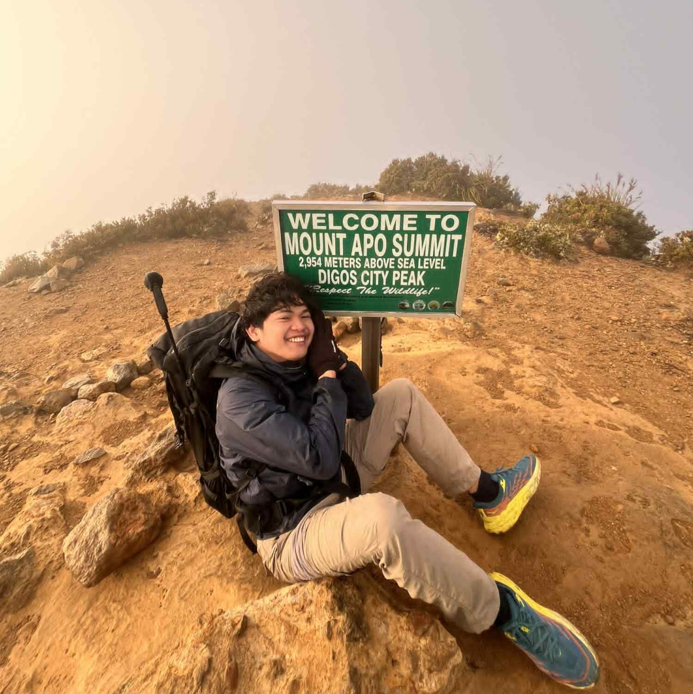
The Sulfuric Boulders
The defining trial of the ascent is the Boulder Face—a steep, barren slope composed of massive volcanic rocks and active fumaroles. Here, the mountain breathes. Steam vents hiss from the yellow-stained earth, venting sulfuric gases that catch the light like pale gold. Climbers must scramble over jagged rock faces where vegetation gives way to stark, open sky. It is a sensory reminder of Mt. Apo's status as an active, though dormant, stratovolcano, holding its volcanic heat close to the surface.
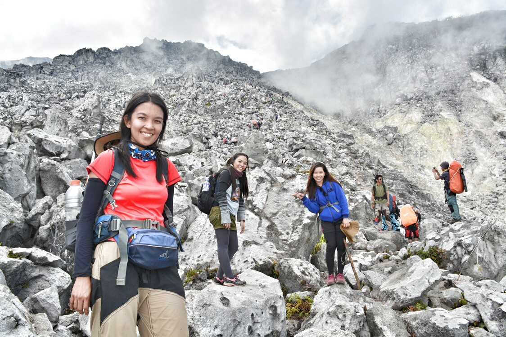
Scrambling up the Boulder Face requires hand-over-hand climbing on loose volcanic gravel and solid stone monoliths. As you climb higher, the smell of sulfur becomes stronger, and the ambient temperature drops, creating a strange contrast between the cold air and the warm steam venting from the rocks. It is a grueling, raw landscape that tests the endurance of every traveler.
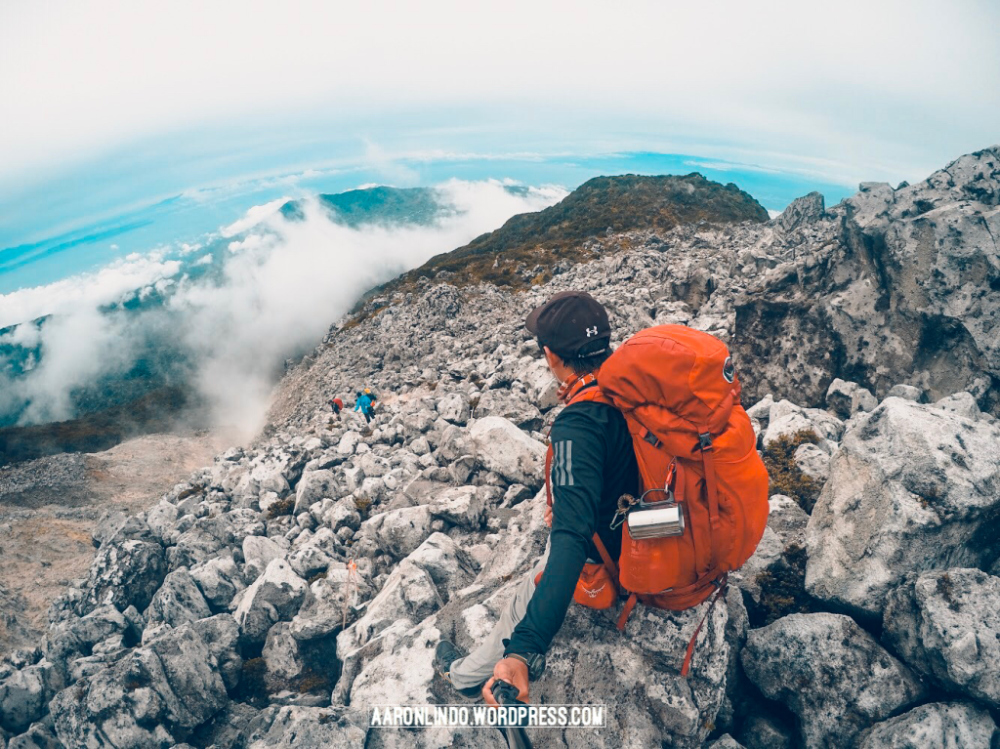
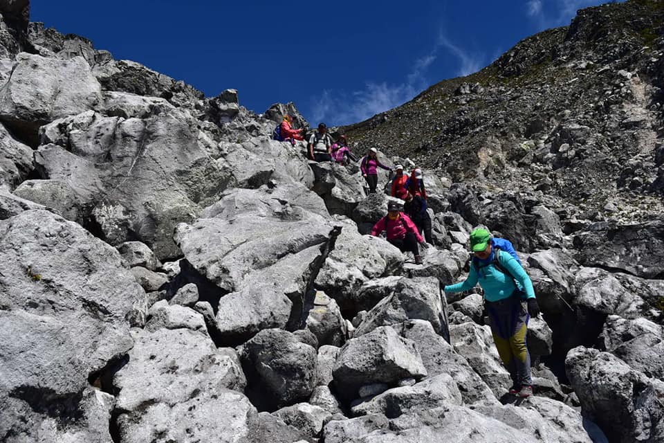
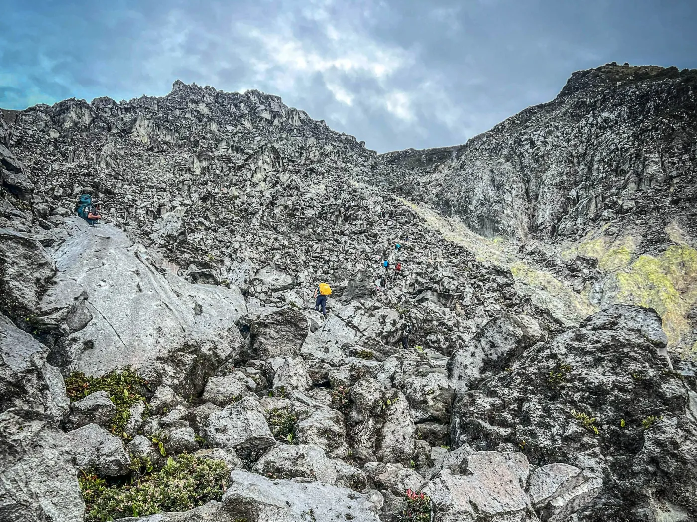
The Ancient Crater
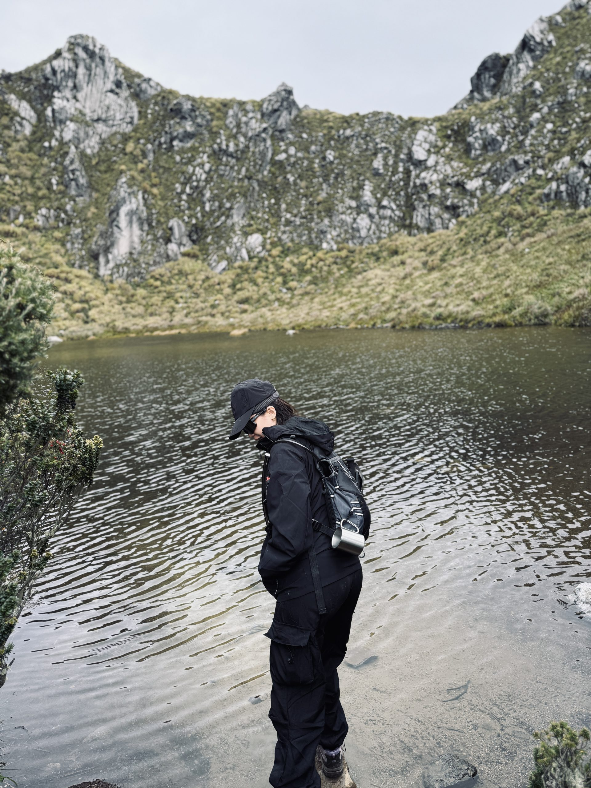
Nearing the summit, the trail leads to the heart of the mountain's volcanic past: the ancient crater. Surrounded by jagged peaks that form the mountain's crown, the crater is a quiet, desolate basin filled with volcanic gravel and hardy alpine shrubs. Unlike active volcanoes with bubbling lava lakes, Apo’s crater is a peaceful sanctuary of stone and low-lying brush, holding the memories of eruptions that occurred thousands of years ago.
Walking along the crater rim feels like walking on the edge of the world. The ground is often swept by cold winds, and fog rolls in quickly, wrapping the rocky peaks in a thick, mysterious shroud. It stands as a monument to the slow, patient grammar of geologic time, where the forces of fire have subsided into a peaceful, high-altitude garden.
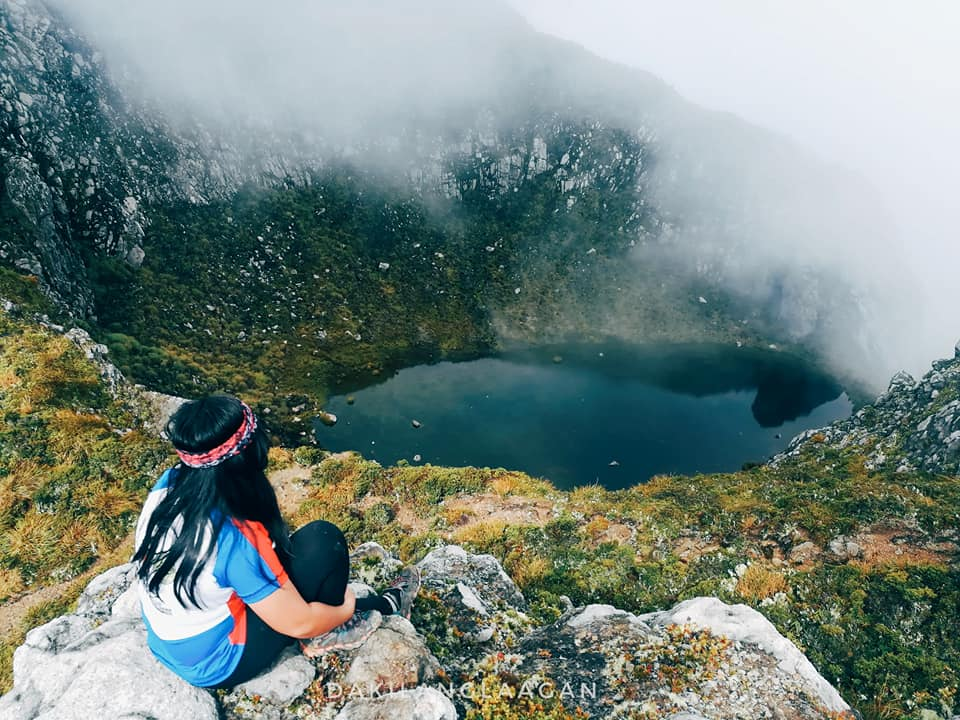
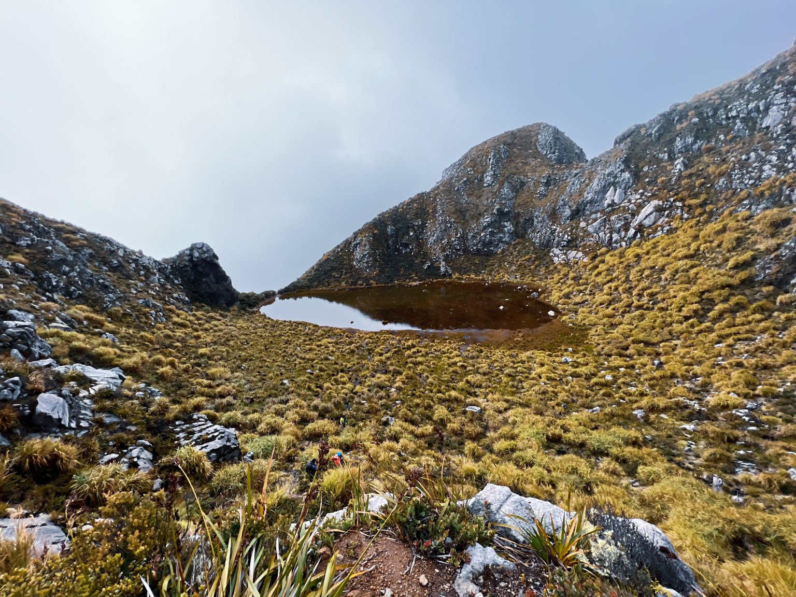
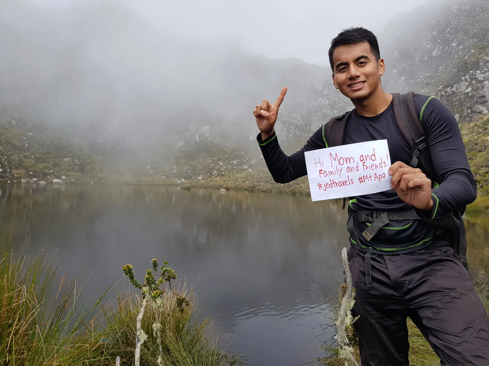
Lake Venado
Descending on the opposite side of the summit lies Lake Venado, a mystical, high-altitude basin nestled at 2,286 meters. Cradled in a valley of dwarf bamboo and moss-draped pines, the lake’s shallow waters act as a mirror to the sky, reflecting the peak of Mt. Apo in perfect silence. During the wet season, the basin fills to form a pristine lake; in the dry season, it shrinks to reveal a damp, grassy flatland. The air here is cold and still, carrying only the occasional whistle of a mountain bird and the heavy scent of damp moss.
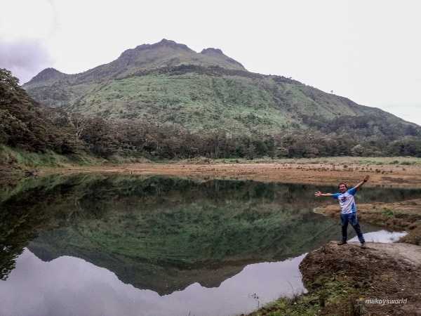
For many indigenous groups, Lake Venado is a sacred space, a place of peace and spirits. Campers who pitch their tents on its shores are treated to sub-zero temperatures at night and misty mornings where the water blends seamlessly into the sky. It represents the quiet, liquid heart of Mt. Apo, contrasting with the dry heat of the boulder fields below.
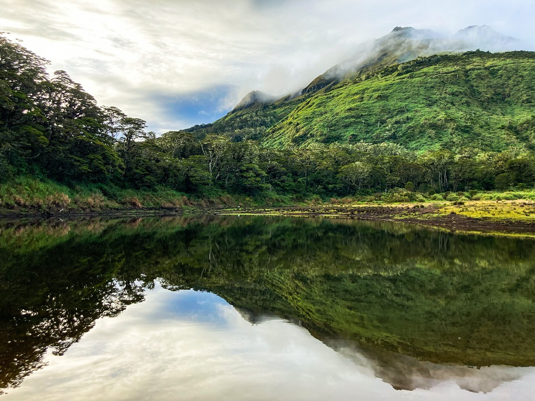
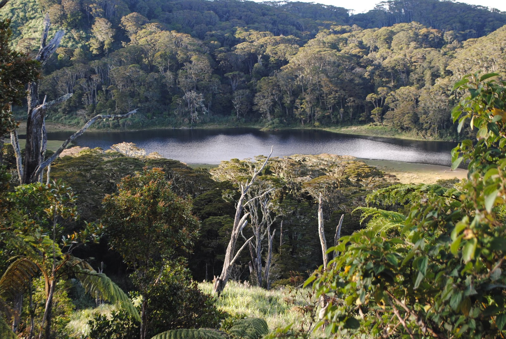
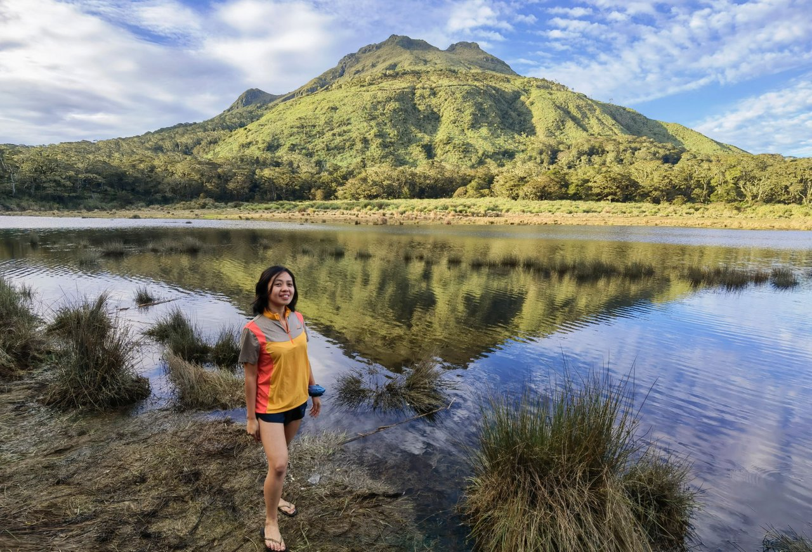